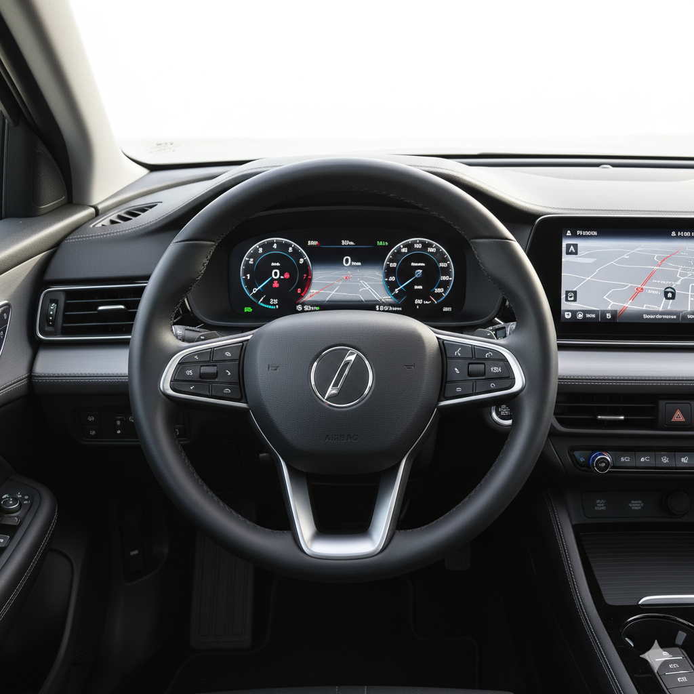

2 Bienvenidos a R
Éste capítulo se encuentra basado en (Ismay, 2025, chap. 1)
2.1 ¿Qué es R y Positron?
En términos simples R es un entorno gratuito para realizar análisis estadísticos y crear gráficos. A lo largo del libro utilizaremos R a través de Positron. R se puede entender como el motor de un automóvil y Positron el tablero de control del automovil que queremos manejar (Ver Figura 2.1).


Si abandonamos la analogía y sómos más específicos, R es un lenguaje de programación y Positron es un Entorno Integrado de Desarrollo que incluye un conjunto de elementos en su interfaz para utilizar de manera mucho más fácil R cuando queremos llevar a cabo análisis estadísticos y explorar datos.
2.2 ¿Cómo instalar R y Positron?
2.2.1 R
Para utilizar R con Positron es necesario primero tener instalado la versión 4.2 de R o una superior. Para instalar R, puedes seguir las instrucciones que aplican para tu sistema operativo en la página de descarga oficial de CRAN.
2.2.1.1 Windows
Selecciona el enlace Download R for Windows, haz clic en base y, finalmente, pulsa en el enlace Download R X.X.X for Windows. Ten en cuenta que X.X.X representa la versión más reciente disponible al momento de la descarga. Una vez que el archivo .exe se haya descargado, haz doble clic en él para ejecutarlo; esto abrirá un asistente con instrucciones en pantalla que te guiará paso a paso hasta completar la instalación.
2.2.1.2 Mac
Selecciona el enlace Download R for macOS y dirígete a la sección Latest release. Haz clic en el paquete adecuado para la arquitectura de tu Mac (por ejemplo, R-X.X.X-arm64.pkg para chips Apple M1/M2/M3, o R-X.X.X-x86_64.pkg para procesadores Intel) para descargar el archivo .pkg. Ten en cuenta que X.X.X representa la versión más reciente disponible al momento de la descarga. Una vez que el archivo se haya descargado, haz doble clic en él para ejecutarlo; esto abrirá un asistente con instrucciones en pantalla que te guiará paso a paso hasta completar la instalación.
2.2.1.3 Linux
Selecciona el enlace Download R for Linux y elige la distribución que utilizas (como Ubuntu, Debian, Fedora o Red Hat). A diferencia de otros sistemas operativos, la instalación en Linux se realiza generalmente a través de la terminal siguiendo las instrucciones específicas de cada página.
2.2.1.4 Verificando la instalación de R
Una vez instales R es importante que verifiques la instalación. La forma más fácil de hacerlo es dar doble click en el ícono de R, , para el caso de Windows o Mac o en Linux abrir el terminal e ingresa R en la línea de comandos.
Si observas que se abre una ventana con la consola de R (en los casos de Windows y Mac) o que en la terminal aparece el texto de bienvenida de la versión 4.2 o superior (en el caso de Linux), la instalación ha sido exitosa. Para finalizar la verificación, simplemente cierra la ventana de la aplicación en Windows o Mac, o en el caso de Linux, escribe el comando q() y presiona EnterEnter para salir de la sesión de R en el terminal.
2.2.2 Positron
Para utilizar R con Positron, es necesario que primero revises los requisitos de instalación para asegurar que el programa funcione bien en tu computador. Luego, dirígete a la página de descarga oficial de Positron, acepta el contrato de licencia, descarga el instalador que corresponda a tu sistema operativo (Windows, Mac o Linux) y completa la instalación.